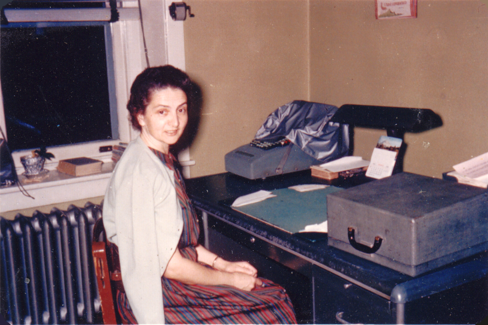

Edith H. Hartman was the first of Chester and Lizzie Hartman's six children, born on October 15, 1917. She was a missionary at the Evangelical Society of Philadelphia (now called Hananeel Ministries).

Edith H. HARTMAN, April 1965
Edith is pictured with her parents and siblings at her parents' home in Boyertown, PA, on the occasion of their 50th wedding anniversary in 1967.
Edith died of stomach cancer at Pottstown Memorial Hospital on April 16, 1970. She is buried next to her parents and brother Lewis at Fairview Cemetery in Boyertown.